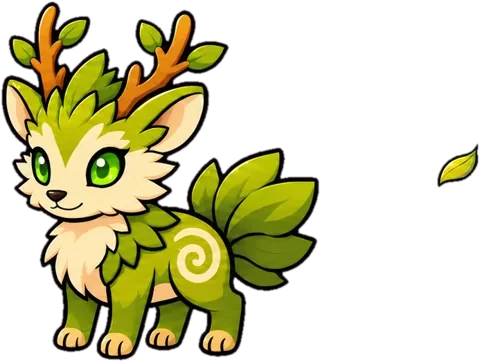

 Grass
Grass Light
LightTap a stage to read its story.
Veldfawn is a small golden-green deer fawn whose body is entirely wrapped in layered leaves and soft mossy fur, with bright amber eyes and a tiny cluster of twig-antlers sprouting from its forehead. Its legs are slender and sure-footed, and a fringe of small leaves runs along its back like a mane. It wanders through the Dark Forest's lighter clearings where thin beams of sunlight pierce the canopy, standing perfectly still in each beam to absorb the rare light. The forest creatures nearby grow calm and slightly brighter in its presence.
Field note: Veldfawn turns its twig-antlers to face the nearest pinprick of sunlight the way a flower tracks the sky.

Dark Forest. Veldfawn lost its herd among the glowing trees. Help Veldfawn find its friends!
Watched over by the Guardian Akilla.
Personality: Gentle
Signature move: Leaf Dance
What is a baby deer called?
Share a Bond Food that matches its types to become friends. Veldfawn loves:
A Bond Food is not a trick. It joins your spirit with the Kimuro's spirit, and only when it chooses you.
Mazes, puzzles, cards and a Bond Mark medal in the printable Dark Forest adventure.
Print the adventure